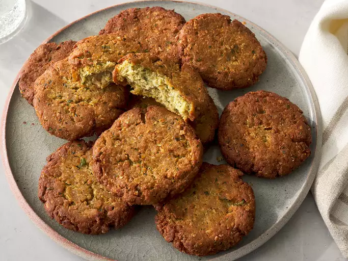
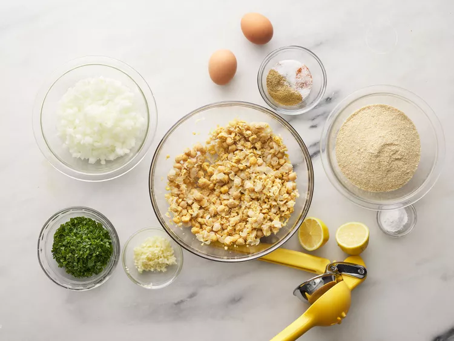
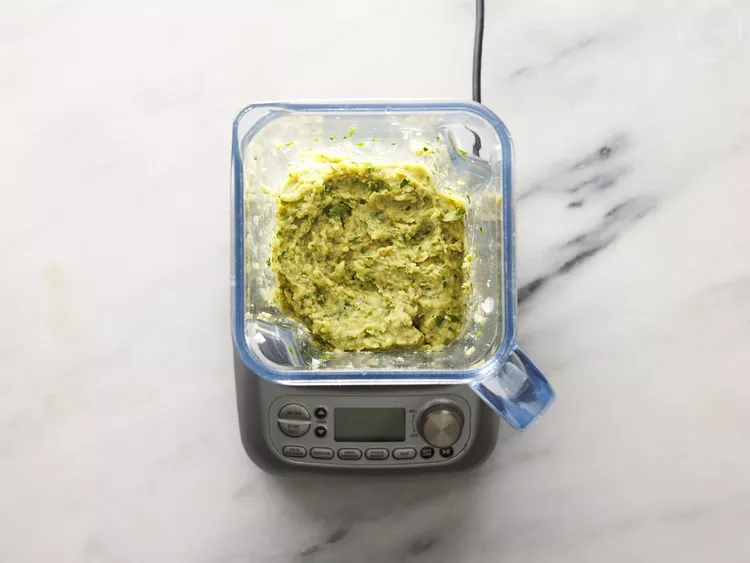
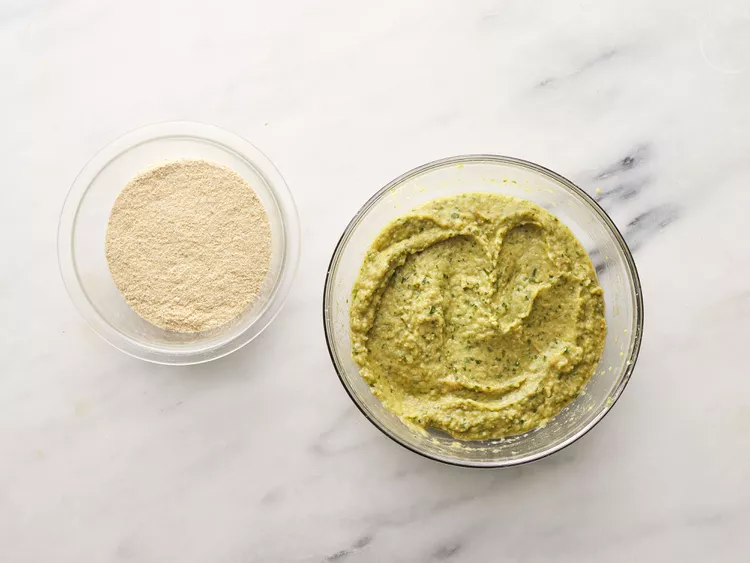
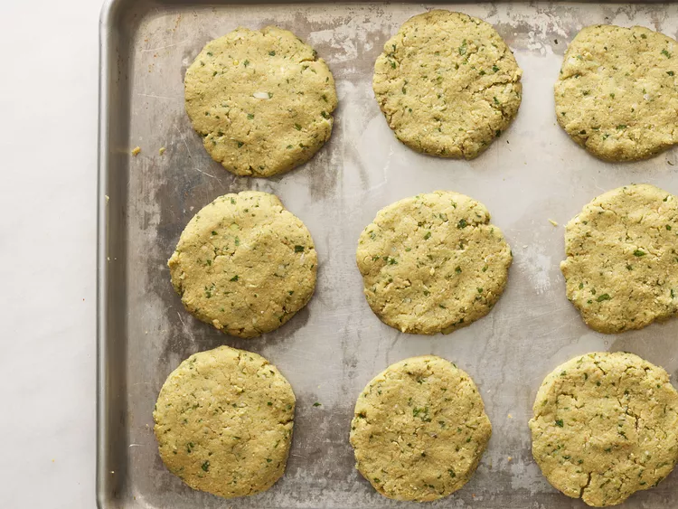

Falafel with canned chickpeas
Home

Credit: Dotdash Meredith Food Studios
Falafel with canned chickpeas
Falafel made with canned chickpeas — just like the ones you taste in a Greek restaurant! This recipe makes about 12 patties. Serve with hummus or tzatziki sauce.
Ingredients
• 1 ½ (15 ounce) cans chickpeas, drained
•¾ cup chopped fresh parsley
•3 cloves garlic,choppeed
•1 tablespoon ground cumin
•1 ½ teaspoons ground coriander
•1 ½ teaspoons lemon juice
•1 ½ teaspoons baking powder
•1 pinch ground black pepper, or to taste
•1 pinch cayenne pepper, or to taste
•1 tablespoon olive oil, or as needed
Steps
- Gather all ingredients

Credit: Dotdash Meredith Food Studios
- Mash chickpeas in a bowl using a masher. Combine mashed chickpeas, onions, parsley, and garlic in a blender; blend until smooth.

Credit: Dotdash Meredith Food Studios
- Mix eggs, cumin, coriander, salt, lemon juice, baking powder, black pepper, and cayenne together in a bowl. Add chickpea mixture and mix together. Add bread crumbs slowly and combine using your hands until mixture will hold together when frying.

Credit: Dotdash Meredith Food Studios
- Heat oil in a skillet over medium-high heat. Form mixture into twelve 3-inch diameter patties. Fry patties in hot oil until browned, 3 to 4 minutes per side.

Credit: Dotdash Meredith Food Studios